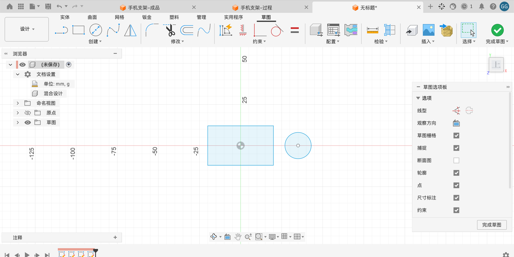
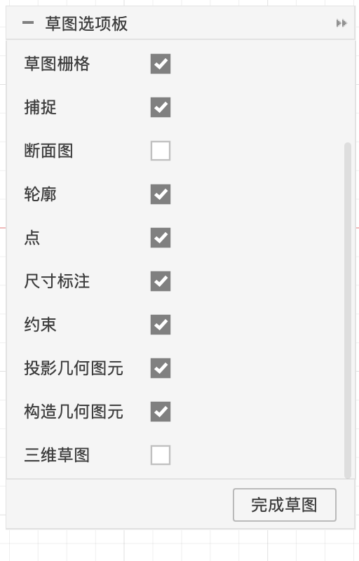
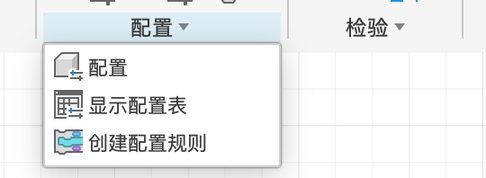
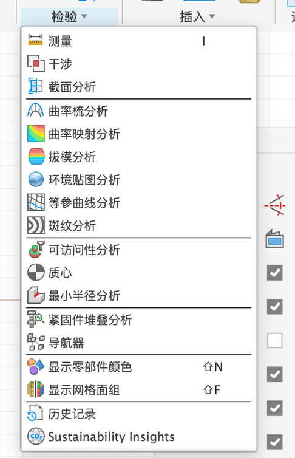
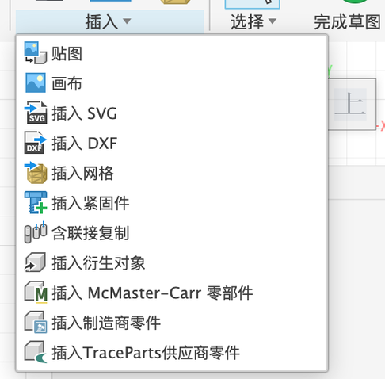
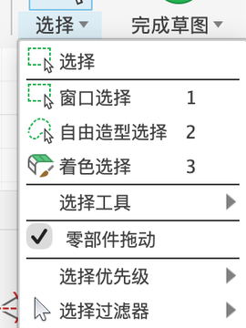

4.1 创建草图与选项板
Quickstart 里已经画过草图了。这一章把草图的所有工具系统地过一遍。先从“在哪里画”和“草图环境里有什么”开始。
草图可以画在哪里#
| 平面 | 怎么选 | 例子 |
|---|---|---|
| 原点平面（XY / XZ / YZ） | 「创建草图」后点画布上的橙色平面，或浏览器里展开 原点 | P2 底板、P4 靠背侧面 |
| 零件上的平面 | 直接点零件的平整面 | P2 挡边、P5 旋钮外侧面 |
| 构造平面 | 先「构造 → 偏移平面 / 夹角平面……」建一个，再在上面画 | P3 线槽截面、P5 过轴水平面 |
草图环境#

进入草图模式的两种方式：新建草图，或者双击浏览器 / 时间轴里已有的草图（编辑草图）。点「完成草图」退出。
草图选项板（完整）#


草图选项板
| 选项 | 含义 | 建议 |
|---|---|---|
| 线型 | 两个图标：普通 ↔ 构造线；普通 ↔ 中心线（选中线后点） | — |
| 观察方向 | 视角转回正对草图平面 | 转乱了就点 |
| 草图栅格 | 显示背景格子 | 勾选 |
| 捕捉 | 鼠标吸附到格子 | 新手建议关，靠尺寸定大小 |
| 断面图 | 把挡住草图平面的实体切开显示 | 在零件内部画草图时打开 |
| 轮廓 | 封闭区域显示浅蓝色 | 勾选 |
| 点 / 尺寸标注 / 约束 | 显示点、尺寸、约束图标 | 勾选；画面太乱时关掉约束 |
| 投影几何图元 | 显示投影进来的线（紫色） | 勾选 |
| 构造几何图元 | 显示构造线（虚线） | 勾选 |
| 三维草图 | 打开后可以在空间里画，不限于草图平面（4.8） | 一般不勾 |
草图模式的工具栏#





